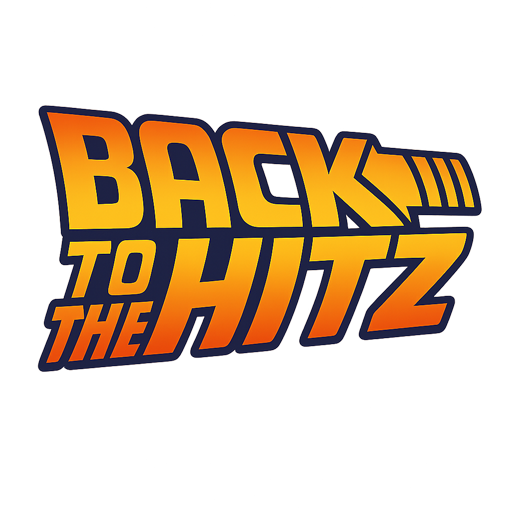
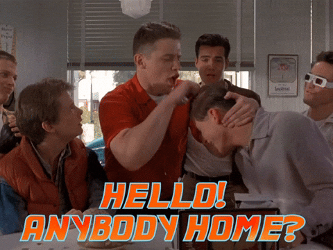

Escanea una tarjeta, viaja entre décadas y adivina el año de canciones, películas y videojuegos antes de que Biff altere la línea del tiempo.
Escáner temporal
Alinea el QR dentro del condensador de flujo para cargar tu pista.
Buscando una tarjeta en la línea del tiempo...

¡Es momento de adivinar! ¿O qué, eres gallina?
Coloca la tarjeta en tu línea del tiempo y revela el año para restaurar la historia.